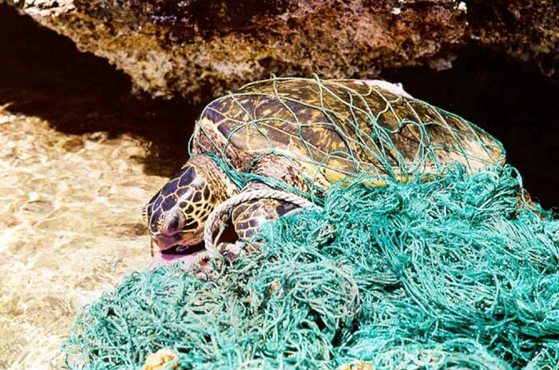

Threats for the Turtle Community
Due to human behavior and lifestyles, six of the seven species of sea turtles are considered threatened or endangered on a global scale. These animals are impacted by people in a variety of ways, from getting caught in fishing gear to having their meat and eggs eaten.
Enlargement in fishing gear
Turtles use air to live. They drown if they are unable to rise for air after becoming trapped underwater in nets or on lines. They can also sustain internal injuries from hooks or external injuries from entanglement, including strangulation or amputation

Consumption & illegal trade of eggs and meat
Despite the fact that sea turtles are protected by laws in the majority of nations, their survival is nevertheless seriously threatened by the illegal trade in their meat, eggs, and shells. The meat and eggs from these animals are gathered for human consumption and, in some cultures, are regarded as delicacies. The sale of turtle eggs is a significant sector that supports numerous individuals in several nations.

Plastic and other marine debris
Every stage of a sea turtle's existence is impacted by plastic. As hatchlings, they crawl through plastic to reach the ocean, swim through it when migrating, mistake it for jellyfish (one of their favorite diets), and then crawl through it once again as adults. Each year, ocean pollution, marine debris ingestion, and entanglement result in the deaths of thousands of sea turtles, whales, and other marine mammals, as well as more than 1 million seabirds.


Turtleshell Trade
Sea sponges that compete with coral for space are eaten by hawksbill sea turtles, who are essential to the health of coral reefs. Additionally, they are favored by snorkelers and divers, and they support local economies by bringing tourists to locations all over the world. The hawksbill's stunning shell, which it used to camouflage itself in the vibrant reefs, is also a significant factor in their current state of vulnerability. Hawksbill shells, commonly called "tortoiseshell," are often used by craftspeople to create jewelry and other items that are sold to tourists.

Things that we can do for protect Sea Turtles
- Turn off the lights
- Be aware of nesting areas of sea turtles
- Consider Volunteering
- Be careful while fishing and boating
- Reduce the carbon footprint
Small sea turtles use the moon's light and reflection to navigate through the ocean at night. Baby sea turtles are impacted by artificial lights and are forced to rely on themselves rather than the ocean, which puts them in dangerous situations where they could die.
Avoid Sea turtles when they hatching or nestin cause they dont like the disturbance when they hatching their eggs
There are numerous methods to positively impact sea turtles' life. Set up a day with your friends to pick up beach trash, educate the community about what you can do to protect sea turtles, and have some fruitful conversations with neighbors about what they can do to protect sea turtles.
The turtle may be killed or injured by boating. So use caution when sailing on the ocean. Keep at least 50 meters away from sea turtles if you observe them in the water.You notice sea turtles close or if they seem interested in your bait, move your fishing site. When you're through fishing, don't forget to return all of your equipment, including nets, hooks, and fishing line.
The gender ratios of sea turtles and the distribution of predators and prey can change due to global warming. Despite the fact that climate change may appear to be a major issue, there are several actions you can directly take to help conserve the sea turtles.
Conservation Projects in Sri Lanka